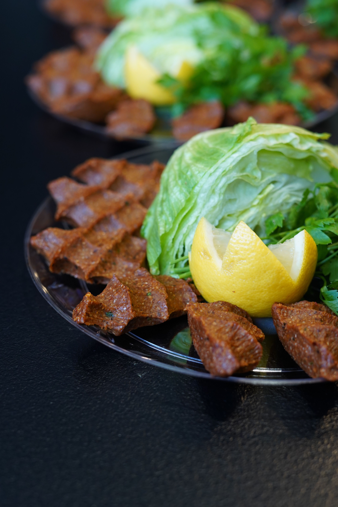
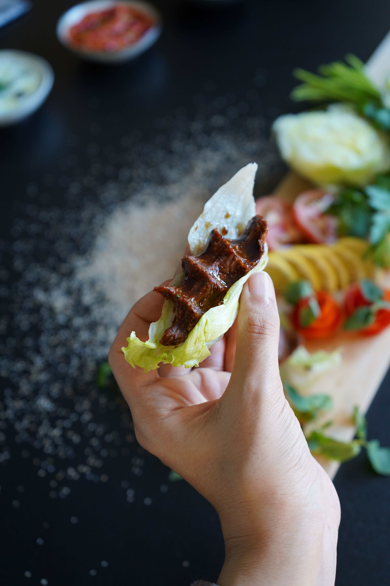

Return Homepage
CigKofte Recipe


Fotos: From Pixabay by Aiseleer.
Ingredients
- 3 cups dark fine bulgur for köfte
- 2 cups hot water
- 1 large onion, with its juice squeezed out
- 4 cloves garlic, crushed
- 3 tablespoons tomato paste
- 3 tablespoons hot pepper paste
- 4–5 tablespoons Urfa isot pepper
- 1 Turkish tea glass of olive oil
- ½ Turkish tea glass of real pomegranate molasses
- Salt, black pepper, cumin, and red pepper flakes
- ½ bunch finely chopped parsley
- 5–6 stalks finely chopped fresh green onion
How to Make It
- Put the bulgur in a large tray. Pour the hot water over it, mix, cover it, and let it swell for 15 minutes.
- Add the squeezed onion purée, crushed garlic, tomato paste, pepper paste, and all the spices to the swollen bulgur.
- Knead the mixture continuously for at least 20–25 minutes, until it starts to become paste-like. Wet your hands lightly whenever they get dry.
- When the bulgur grains are soft and no longer feel hard in your hand, add the olive oil and pomegranate molasses. Knead for another 5 minutes. This gives the çiğ köfte shine and a chewy, elastic texture.
- Add the finely chopped parsley and green onions at the end. Knead gently for only 1–2 minutes, just until everything is mixed, so the herbs do not get crushed.
- Take pieces of the mixture, squeeze them in your palm to shape them, and serve with plenty of lettuce.